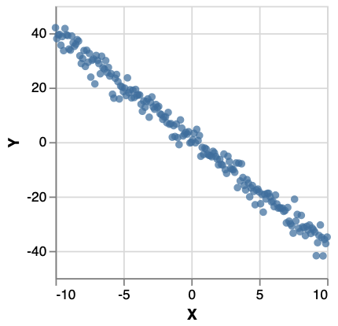

User Guide¶
Probabilistic programming is all about being able to write probabilistic models as programs. For instance, here is a Bayesian linear regression model, which we would write equationally as:
but in code as:
paramPriorRegression :: Distribution (Double, Double, Double)
paramPriorRegression = do
slope <- normal 0 2
intercept <- normal 0 2
noise <- gamma 4 4
return (slope, intercept, noise)
regression :: Kernel [(Double, Double)] (Double, Double, Double)
regression xsys = do
(slope, intercept, noise) <- paramPriorRegression
forM_ xsys \(x, y) -> factor $ normalPdf (slope * x + intercept) (sqrt noise) y
return (slope, intercept, noise)
regression takes observations (a list of pairs of x and y values), and using the prior expressed by paramPriorRegression, returns the posterior conditioned on the observations.
This is the model. To perform inference , suppose we have a data set xsys like:

To run the model
mhRunsRegression = sampler
$ mcmc MCMCConfig
{numMCMCSteps = 1500,
proposal = SingleSiteMH,
numBurnIn = 500}
(regression xsys)
This yields 1000 samples from an MCMC walk using an MH kernel. mh n produces a distribution over chains of length n, along with the probability of that chain. Sampling a chain and plotting its final state gives:

Monad-bayes provides a variety of MCMC and SMC methods, and methods arising from the composition of the two.
Resources¶
Other probabilistic programming languages with fairly similar APIs include WebPPL and Gen. This cognitive-science oriented introduction to WebPPL is an excellent resource for learning about probabilistic programming. The tutorials for Gen are also very good, particularly for learning about traces.
Specifying distributions¶
A distribution in monad-bayes over a set \(X\), is of type:
For beginner friendliness, a synonym type Measure a = forall m . MonadDistribution m => m a is provided (as well as Distribution shown above, for normalized distributions, and Kernel for functions into distributions).
Monad-bayes provides standard distributions, such as
which is distributed uniformly over \([0,1]\).
The full set is listed at https://hackage.haskell.org/package/monad-bayes-0.1.1.0/docs/Control-Monad-Bayes-Class.html
Note that these primitives already allows us to construct quite exotic distributions, like the uniform distribution over (+) :: Int -> Int -> Int and (-) :: Int -> Int -> Int:
distributionOverFunctions :: Distribution (Int -> Int -> Int)
distributionOverFunctions = uniformD [(+), (-)]
Constructing distributions as programs¶
monad-bayes also lets us construct new distributions out of these. MonadMeasure m implies Monad m and in turn Functor m, so we can do the following:
This is the uniform distribution over \((0.5, 1]\).
As an important special case, if x :: MonadMeasure m => m (a,b) is a joint distribution over two variables, then fmap fst a :: MonadMeasure m => m a marginalizes out the second variable. That is to say, fmap fst a is the distribution \(p(a)\), where \(p(a) = \int_b p(a,b)\).
The above example use only the functor instance for m, but we also have the monad instance, as used in:
example :: MonadMeasure m => m Double
example = bernoulli 0.5 >>= (\x -> if x then random else normal 0 1)
It's easiest to understand this distribution as a probabilistic program: it's the distribution you get by first sampling from bernoulli 0.5, then checking the result. If the result is True, then sample from random, else from normal 0 1. As a distribution, this has a PDF:
Equivalently, we could write this in do-notation as:
example :: MonadMeasure m => m Double
example = do
bool <- bernoulli 0.5
if bool then random else normal 0 1
A technical note: it is often tempting to read the line bool <- bernoulli 0.5 as saying "take a sample from bernoulli 0.5. But although we'll see below that example can be interpreted as a sampler, there are many other interpretations, not least as a mathematical specification of a particular distribution.
That said, it is often useful to think of probabilistic programs as specifying distributions over program executation traces. For example, one trace of example as defined above is (informally): {bernoulli 0.5 : True, random : 0.7}.
Hard and soft conditioning¶
monad-bayes provides a function score :: MonadMeasure m => Log Double -> m (). (Note: Log Double is a wrapper for Double which stores doubles as their logarithm, and does multiplication by addition of logarithms.)
example :: MonadMeasure m => m Double
example = do
bool <- bernoulli 0.5
number <- if bool then random else normal 0 1
score number
return bool
It's easiest to understand this in terms of the "program execution trace" perspective described above. What the score statement does is to multiple every trace by the value of number in that particular trace.
condition in then defined as follows:
condition b throws away every trace in which b is False, and keeps all traces in which b is True. For example:
This describes a Poisson distribution in which all even values of the random variable are marginalized out.
Inference methods¶
To quote this page, "marginal inference (or just inference) is the process of reifying the distribution on return values implicitly represented by a stochastic computation.". That is, a probabilistic program (stochastic computation) is an abstract object and inference transforms it into something concrete, like a histogram, a list of samples, or parameters of a known distribution.
All inference methods in monad-bayes work with all distributions. The only exception is that exact inference only works with discrete distributions and will throw a runtime error on continuous distributions.
The challenge of inference is that most distributions that are of interest are not as simple as sprinkler. They could have continuous random variables, a huge number of them, or even a number of them that is itself random. They could involve a series of observations, interspersed with other sources of randomness.
Designing a language in which you can specify arbitrarily complex (computable) distributions as probabilistic programs turns out to be a largely solved problem. The tools given about are sufficient for that.
The hard part is designing a language where you can specify how you want to do inference, because sophisticated, often approximate, inference methods are almost always necessary for the models involved in solving real world problems.
Two of the large classes of inference methods are sampling based methods and gradient based methods. The latter only apply to continuous probability distributions, and are not the focus of monad-bayes.
Exact inference¶
So enumerator (bernoulli 0.7) gives you
This works for distributions with factor statements (i.e. an instance of MonadMeasure), as in:
model :: MonadMeasure m => m Bool
model = do
x <- bernoulli 0.5
y <- bernoulli 0.3
condition (x || y)
return x
enumerator model
> [(True,0.7692307692307692),(False,0.23076923076923078)]
Note: enumerator only works on finite discrete distributions
It will run forever on infinite distributions like enumerator (poisson 0.7) and will throw the following runtime error on continuous distributions as in enumerator (normal 0 1):
"Exception: Infinitely supported random variables not supported in Enumerator"
However, it's totally fine to have the elements of the support themselves be infinite, as in:
which gives
Near exact inference for continuous distributions¶
Monad-Bayes does not currently support exact inference (via symbolic solving) for continuous distributions. However, it does support numerical integration. For example, for the distribution defined by
you may run probability (0, 1000) model to obtain the probability in the range (0,1000). As expected, this should be roughly \(0.5\), since the PDF of model is symmetric around \(0\).
You can also try expectation model, variance model, momentGeneratingFunction model n or cdf model n.
If the model has factor statements, as in
model :: MonadMeasure m => m Double
model = do
var <- gamma 1 1
n <- normal 0 (sqrt var)
condition (n > 0)
return var
we must first normalize the model, as in probability (0, 0.1) (normalize model).
Independent forward sampling¶
For any probabilistic program p without any condition or factor statements, we may do sampler p or sampleIOfixed p (to run with a fixed seed) to obtain a sample in an ancestral fashion. For example, consider:
sampler example will produce a sample from a Bernoulli distribution with \(p=0.5\), and if it is \(True\), return a sample from a standard normal, else from a normal with mean 1 and std 2.
(replicateM n . sampler) example will produce a list of n independent samples. However, it is recommended to instead do (sampler . replicateM n) example, which will create a new model (replicateM n example) consisting of n independent draws from example.
Because sampler example is totally pure, it is parallelizable.
Monad-bayes gives the user freedom in the random number generator of the sampler: use sampleWith for full control.
Independent weighted sampling¶
To perform weighted sampling, use:
Weighted SamplerIO is an instance of MonadMeasure, so we can apply this to any distribution. For example, suppose we have the distribution:
Then:
is an IO operation which when run, will display either (False, 0.0) or (True, 1.0)
Lazy sampling¶
If you want to forward sample from an infinite program, just as a distribution over infinite lists, you can use monad-bayes's lazy sampler, which is based on LazyPPL. For example,
import qualified Control.Monad.Bayes.Sampler.Lazy as Lazy
example :: MonadDistribution m => m [Double]
example = do
x <- random
fmap (x:) example
infiniteList <- Lazy.sampler example
take 4 infiniteList
To perform weighted sampling, use lwis from Control.Monad.Bayes.Inference.Lazy.WIS as in lwis 10 example. This takes 10 weighted samples, and produces an infinite stream of samples, regarding those 10 as an empirical distribution.
LazyPPL's mh implementation is also available.
Markov Chain Monte Carlo¶
There are several versions of metropolis hastings MCMC defined in monad-bayes. The standard version is found in Control.Monad.Bayes.Inference.MCMC. You can use it as follows:
(sampler . mcmc (MCMCConfig {
numMCMCSteps = 10,
numBurnIn = 5,
proposal = SingleSiteMH})) :: Traced (Weighted SamplerIO) a -> IO [a]
As you can see, mcmc takes a MCMCConfig object, which is where you specify the number of steps in the MCMC chain, and the number of burn in steps. SingleSiteMH refers to the proposal used in the chain.
Traced (Weighted SamplerIO) is an instance of MonadMeasure, so we can apply this to any distribution. For instance:
Then
run :: IO [Bool]
run = (sampler . mcmc (MCMCConfig {
numMCMCSteps = 10,
numBurnIn = 5,
proposal = SingleSiteMH})) example
produces \(5\) unbiased samples from the posterior, by using single-site trace MCMC with the Metropolis-Hastings (MH) method. This means that the random walk is over execution traces of the probabilistic program, and the proposal distribution modifies a single random variable as a time, and then uses MH for the accept-reject criterion. For example, from the above you'd get:
The final element of the chain is the head of the list, so you can drop samples from the end of the list for burn-in.
Streaming MCMC¶
You can also run MCMC using mcmcP. This creates an infinite chain, expressed as a stream or using the corresponding type from the pipes library, a Producer. This is a very natural representation of a random walk in Haskell.
You can run this with a terminal user interface (TUI) by doing e.g.
Sequential Monte Carlo (Particle Filtering)¶
Run SMC with two resampling steps and two particles as follows, given a model m:
output =
sampler $
population $
smc (SMCConfig
{numSteps = 2,
numParticles = 2,
resampler = resampleMultinomial} )
m
Interoperating with other Haskell code¶
Probabilistic programs in monad-bayes are Haskell programs. This contrasts to many probabilistic programming languages, which are deeply embedded and cannot smoothly interact with their host language.
For example, we can use ordinary monadic combinators, as in:
or
You may write distributions over artibrary types. For example, rather than drawing a sample from a distribution and then using the sample to construct a histogram or a plot, you can directly define a distribution over histograms or plots, and sample from that.
You can have distributions over arbitrary data structures, such as trees, JSONs, databases, and so on. You can use MonadMeasure m => m as the monad in libraries which are parametric in a monad, such as megaparsec or pipes.
Tips on writing good probabilistic programs¶
There are many ways to specify the same distribution, and some will lend themselves more readily to efficient inference than others. For instance,
mixture1 point = do
cluster <- uniformD [1,5]
prediction <- normal cluster 1
condition (prediction == point )
return cluster
is a piece of code to infer whether an observed point was generated from a Gaussian of mean \(1\) or \(5\). That is, mixture1 is a conditional Bernoulli distribution over the mean given an observation. You're not going to be able to do much with mixture1 though. Exact inference is impossible because of the sample from the normal, and as for sampling, there is zero probability of sampling the normal to exactly match the observed point, which is what the condition requires.
However, the same conditional distribution is represented by
This version, while denotationally identical (i.e. representing the same mathematical object), is perfectly amenable to exact inference:
yields
as well as sampling methods.
The local lesson here is that you shouldn't condition on samples from a continuous distribution and expect a sampling based inference method to work. But the more general lesson is that you aren't exempted from thinking about inference when specifying your model. Alas.
As a second example of this general point, consider:
and
Like in the previous example, allAtOnce and incremental denote the same distribution, namely [(True, 1.0), (False, 0.0)]. However, any inference algorithm for allAtOnce will have to explore all 4 possible variable assignments ([(True,True), (True, False), (False, True), (False, False)]). Meanwhile, incremental opens the possibility for inference algorithms to first determine the value of x and then of y.
In this example, the performance difference is negligible, but it's easy to extend this to models where it's the difference between something tractable and something intractable.
API docs¶
For API docs in the normal Haskell style, see hackage.
Monad-Bayes vs other libraries¶
Monad-bayes is a universal probabilistic programming system, in the sense that you can express any computable distribution. In this respect it differs from Stan, which focuses instead on handling inference on an important subset well.
There is a variety of universal probabilistic programming libraries and/or languages, which include WebPPL, Gen, Pyro and Edward.
What other approaches have that Monad-Bayes lacks:
A lot of engineering work has been put into the above libraries and languages to make them practical for real-world problems. While monad-bayes' core is very nice, it doesn't come with a lot of the batteries you might want. (The author's PhD thesis contains this relevant paragraph: "our library implements basic versions of advanced sampling algorithms. However, their successful application in practice requires incorporating established heuristics, such as: adaptive proposal distributions, controlling resampling with effective sample size, tuning rejuvenation kernels based on population in SMC2, and so on.")
What Monad-Bayes has that is unique:
Monad-Bayes is just a library, unlike almost all other PPLs, which are separate languages written inside another language. As such, probabilistic programs in monad-bayes are first class programs in Haskell with no new special syntax or keywords. This allows all of Haskell's expressive power to be brought to bear. You can write distributions over any datatype (lists, trees, functions, histograms, JSON files, graphs, diagrams, etc). You can use powerful libraries like pipes, lens and Parsec. Everything is pure. Everything is strongly typed. You can make use of laziness.
Models are monadic and inference is modular. Complex inference algorithms like RMSMC or PMMH are built out of simple composable pieces, and so are expressable extraordinarily simply.